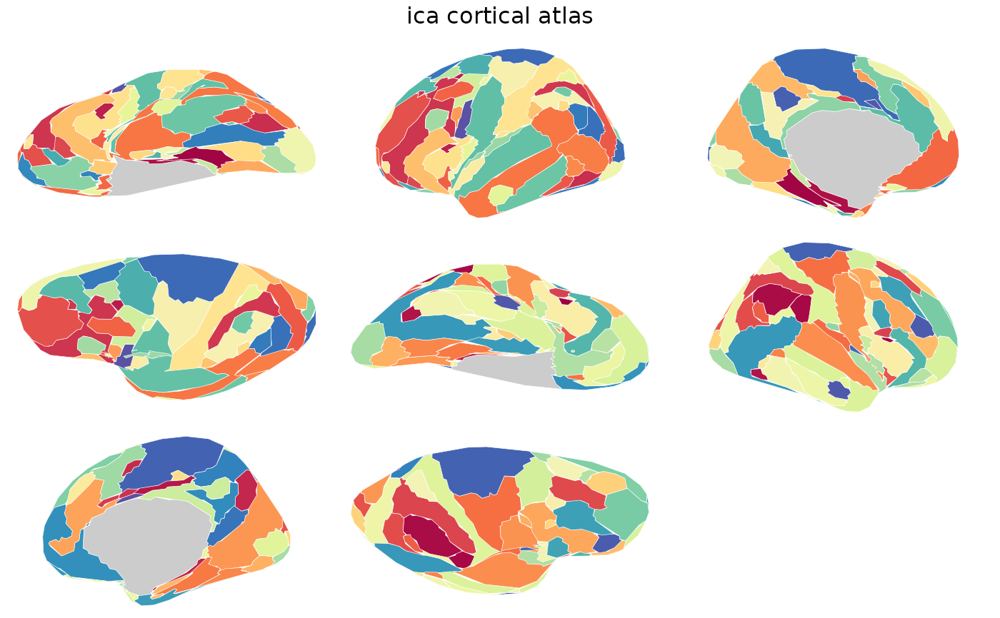

Brain atlas for the probabilistic independent component analysis (ICA)
cortical parcellation with 163 regions. Contains 2D polygon geometry
for ggseg::geom_brain().
ica()A ggseg.formats::ggseg_atlas object (cortical).
Beckmann CF, Smith SM (2004). Probabilistic Independent Component Analysis for Functional Magnetic Resonance Imaging. IEEE Transactions on Medical Imaging, 23(2):137-152. doi:10.1109/TMI.2003.822821
ica()
#>
#> ── ica ggseg atlas ─────────────────────────────────────────────────────────────
#> Type: cortical
#> Regions: 168
#> Hemispheres: left, right
#> Views: inferior, lateral, superior, medial
#> Palette: ✔
#> Rendering: ✔ ggseg
#> ✔ ggseg3d (vertices)
#> ────────────────────────────────────────────────────────────────────────────────
#> hemi region label
#> 1 left LH_region_1 lh_LH_region_1
#> 2 left LH_region_2 lh_LH_region_2
#> 3 left LH_region_3 lh_LH_region_3
#> 4 left LH_region_4 lh_LH_region_4
#> 5 left LH_region_5 lh_LH_region_5
#> 6 left LH_region_6 lh_LH_region_6
#> 7 left LH_region_7 lh_LH_region_7
#> 8 left LH_region_8 lh_LH_region_8
#> 9 left LH_region_9 lh_LH_region_9
#> 10 left LH_region_10 lh_LH_region_10
#> ... with 158 more rows
plot(ica())
